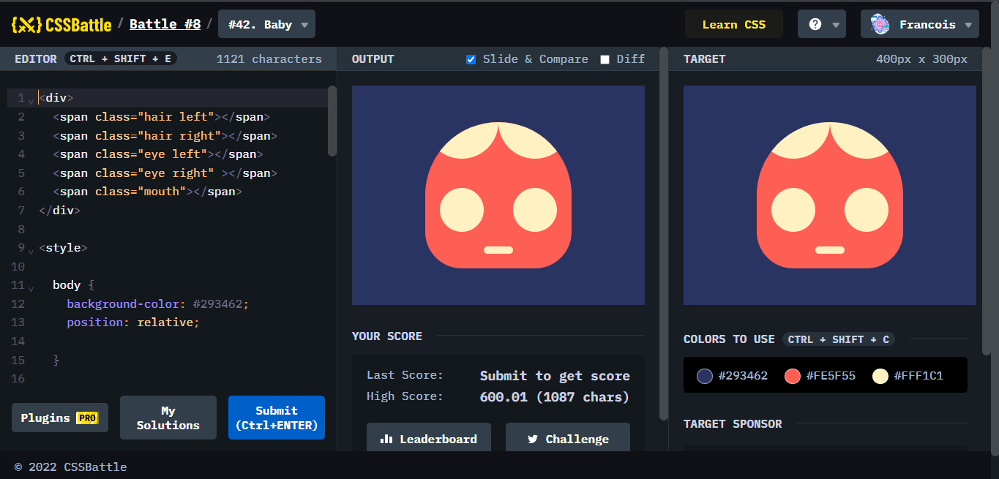
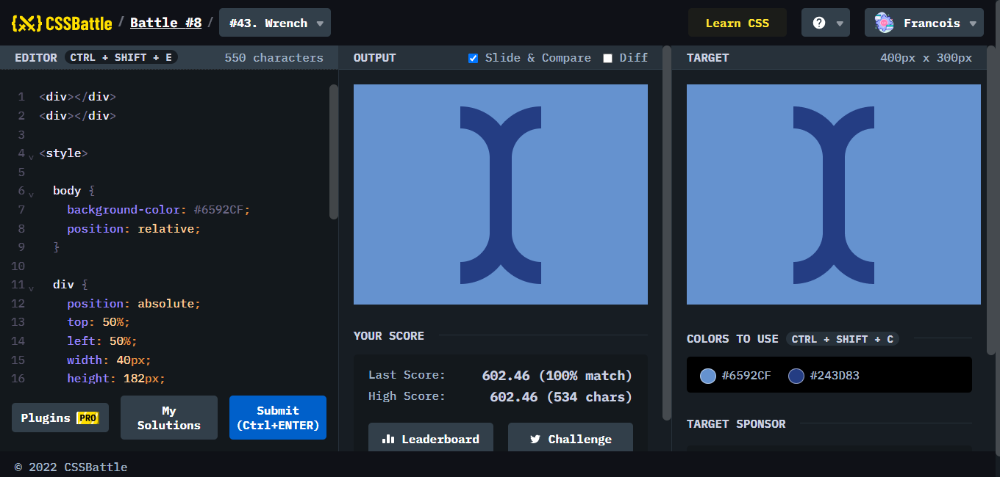
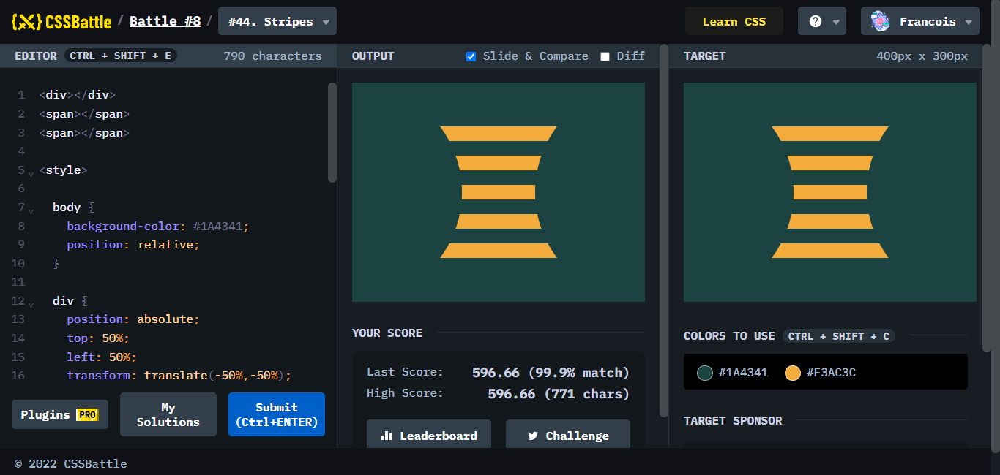

Battle.8では、3問が出題されていて、週末の時間に解いてくださいとのことです。解きごたえはいいのでしょうか。みてみましょう。

ポイント
#42 Baby の頭の髪をどのようにしようかとても迷ったが、円を顔となるパーツに重ねて、overflow:hiddenで隠せば済むところを、全然気づけずにかなり時間を取られた。急にひらめいて自分がびっくりした。

ポイント
borderでひとつのborderを消す、もう4回くらいした課題であるが、大きさが合わなかったり、丸みの部分の調節が難しかったりで、時間がかかった。

ポイント
正確にできたと思ったし、違いをはかるところにも差はないのにもかかわらず、99.9%マッチであった。この辺はもう微差か、本当の正しい答えがあるかだと思ったため、できたことにして進むことにした。